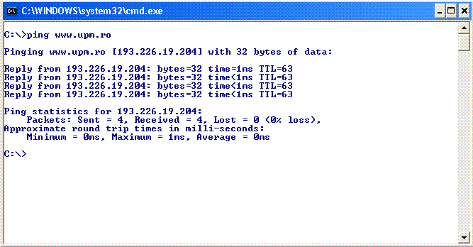

Legatura seriala :cel mai simplu mod de a conecta doua calculatoare intre ele.
Conectarea calculatoarelor la distanta
Pentru a realiza legaturi la distanta intre calculatoare trebuie
sa utilizam o retea de comunicatii. O retea special construita pentru transmisi de date
ar fi extrem de scumpa asa ca s-a optat pentru a utiliza o retea existenta deja.
Cea mai potrivita retea de comunicatii care sa poata fi folosita pentru
transmisii este reteaua telefonica.
In reteaua telefonica se pot transmite numai semnale analogice
asemanatoare cu semnalele folosite pentru transmisia vocii.
Pentru a putea transmite pe reteaua telefonica semnalele digitale
furnizate de calculatoare, avem nevoie de un intermediar care sa transforme aceste semnale digitale
in semnale analogice care sa poata fi transmise pe reteaua telefonica.
Modemul este dispozitivul care se foloseste atat pentru a converi
semnalul digital in analogic (modulare) la emitator cat si pentru a converi semnalul analogic in
semnal digital (demodulare) la receptor.
De obicei transmisiile de date se fac in ambele directii, deci modemul
are facilitati atit de modulare cat si demodulare.
Tipurile de modulare mai des intalnite sunt modularea in amplitudine
si modularea in frecventa.
Modularea in amplitudune se realizeaza dupa principiul din figura de
jos:
Modularea in frecventa se realizeaza dupa principiul din figura de
jos:
Retele de calculatoare
Topologia stea (star)
Toate statiile sau nodurile retelei sunt conectate la un server central
Daca serverul central (nodul central)se blocheaza intreaga retea este blocata.
Topologia inel(ring)
Mesajele sunt trecute pe la fiecare statie in inel
Datele sunt transmise intr-un singur sens si de aceea de cele mai multe ori se foloseste topologia inel dublu.
Cea mai cunoscuta retea de acest tip este reteaua Token Ring .
Topologia magistrala unica (bus)
Toate nodurile retelei sunt conectate la un singur cablu care se intinde de-a lungul retelei.
Cea mai cunoscuta retea magistrala unica (bus)este reteaua Ethernet .
Retea intinsa de dimensiuni mari WAN (Wide Area Network )
O retea cu calculatoare si terminale dispuse geografic la distante mari
Utilizeaza circuitele obisnuite de telecomunicatii avind o purtatoare comuna.
Utilizeaza tehnologia de comutare a pachetelor.
Retea de dimensiuni medii-proprie oraselor (Metropolitan Area Network) MAN
Interconecteaza cladiri intr-o arie geografica de dimensiunea unui oras sau localitati.
Retele locale (Local Area Network) LAN
Un grup de calculatoare sau statii de lucru conectate in general in aceeasi zona avind scopul de a schimba informatii si de a folosi in comun resurse
In general una sau mai multe calculatoare joaca rolul de servercu scopul de a partaja periferii ca de exemplu hard diskuri,imprimante
strimere, etc.
Hypercuburi
Un hypercub de ordinul n este o retea ierarhica ce contine 2n procesoare.
Daca luam un hypercub de ordinul 2 cu 22=4 procesoare:
si le conectam cu un alt cu un alt hypercub de ordinul 2 astfel incitit un cub sa aiba o legatura cu legatura corespunzatoare intr-un alt cub:
obtinem un hypercub de ordinul 3.
Internetul
Internetul este "reteaua retelelor ", cu milioane de calculatoare conectate in retele si milioane de calculatoare conectate individual.
Este o colectie descentralizata de diferite retele, fiecare gestionata de grupuri separate care agreeaza un set comun de protocoale
pentru a lega calculatoarele impreuna.
Dispune de o serie de servicii cum ar fi: www,ftp, email.
Serviciul WWW, permite accesarea fisierelor hypertext facind posibil accesul la diferite informatii.
Bazele serviciului WWW au fost puse in 1989 de catre Tim Berners Lee de la CERN (Centrul European pentru Fizica Nucleara din Geneva), pentru a
permite fizicienilor sa imparta mai usor rezultatele muncii lor concretizate in lucrari stiintifice.
Pentru a accesa Web-ul, sunt utilizate browsere ca de exemplu Windows Explorer, Mozila, Netscape , NCSA Mosaic etc
Tehnologia Internet se bazeaza pe cercetarile Agentiei pentru Proiecte de Cercetare Avansate - Advanced Research Projects Agency (ARPA).Aceasta
tehnologie include un set de standarde ce precizeaza detaliile privind modul în care calculatoarele comunica, precum si un set de conventii pentru
interconectarea retelelor si dirijarea traficului. Comunicarea in Internet se bazeaza pe suita de protocoale internet TCP/IP (Transmission Control
Protocol/Internet Protocol).Modelul TCP/IP, definit pentru prima data in 1974 de catre Cerf si Kahn, reprezinta o arhitectura flexibiia si fiabila,
care asigura functionarea retelei. Modelul TCP/IP cuprinde patru niveluri : Aplicatie, Transport, Retea (sau Internet) si Acces la Retea.
Tehnologia TCP/IP poate fi utilizata pentru a comunica în orice fel sisteme de retele interconectate.
Comenzi IP
Din linia de comanda CMD sunt disponibile o serie de comenzi referitoare la IP, cum ar fi:
Trasare ruta IP (Trace IP address Route): tracert www.adresameaip.ro
Afisare sesiuni TCP/IP (Displays the TCP/IP protocol sessions): netstat
Afisare ruta locala (Display Local Route): route
Afisare adresa MAC (Display Resolved MAC Addresses): arp
ARP vine de la Address Resolution Protocol
Afisare nume calculator (Display Name of Computer Currently on): hostname
/? - utilizat dupa comenzi iti va afisa sectiunea de Ajutor privind comanda respectiva.
Structura Internetului
Internetul este realizat prin conectarea unui numar foarte mare de retele si calculatoare din intreaga lume. Calculatoarele
conectate la Internet pot face schimb de informatii intre ele. Informatia circula sub forma de pachete, fiecare pachet avand o adresa de destinatie
si o adresa de expeditie.
La internet se pot conecta orice fel de calculatoare si orice fel de retele.
Internetul este compus dintr-o multitudie de noduri de internet R1,R2,R3,...,Rn in care se gasesc Routere cu rolul de a dirija pachetele de informatie.
La aceste noduri sunt conectate calculatoare sau servere de retea.
Universitatea "Petru Maior" din Tg.Mures dispune de un nod de Internet dotat cu un Router CISCO 7606 conectat pe o legatura
redondanta cu 2 ramuri spre nodul Geant2 RoEduNet situat in Bucuresti. Ramura principala este realizata cu fibra optica Dark Fibre 1320-2200 nm .
Legatura este realizata in tehnologia 10 G DWDM Dense Wavelength Division Multiplexing (multiplexarea cu divizarea densa a lungimii de unda ).
Ramura secundara ,inclusa pentru realizarea redundantei este tot de tipul DWDM dar de capacitate 1G. Nodul UPM mai dispune de o legatura pe fibra
optica SFR 1G via RDS. Nodul Geant 2 RoEduNet din Bucuresti dispun de o serie de legaturi cu alte Routere, schema de legaturi fiind prezentata mai jos.
Adresare in Internet - Adrese IP
Identificarea calculatoarelor din Internet se face prin intermediul adreselor de Internet ( adrese IP)
codificate pe patru octeti aparand ca o succesiune de 4 numere separate prin ".".
Pentru a afla adresa IP a unui server, putem folosi comanda cmd ping Sa aflam de exemplu adresa IP a serverului www.upm.ro
Vom lansa comanda ping www.upm.ro

Am aflat deci ca adresa IP a serverului upm.ro este 193.226.19.204
O adresa IP este formata dintr-o pereche de numere reprezentand numele retelei si identificatorul masinii(calculatorului, sau severului)
in cadrul acelei retele.
Adresarea in Internet nu este o adresare liniara ci una ierarhica.
Exista mai multe clase de adrese:
Adrese de clasa A : 0.0.0.0--127.255.255.255
Adrese de clasa B :128.0.0.0--191.255.255.255
Adrese de clasa C :192.0.0.0--223.255.255.255
Adrese MULTICAST :224.0.0.0--239.255.255.255
Adrese REZERVATE :240.0.0.0--247.255.255.255
DSN-Domain Name System
Adresele IP sunt dificil de retnut de utilizatori astfel, s-a introdus sistemul numelor de domeniu
(DNS-Domain Name System ).DNS-ul este de fapt numele unic prin care un site poate fi accesat din Internet.
De exemplu DNS-ul serverului Univ. "Petru Maior" este upm.ro
Fiecare domeniu este gestionat de o autoritate care, gestioneaza toate numele dintr-un anumit domeniu.
Domeniul .ro este gestionat de www.rotld.ro . Toate rezervarile de nume sunt facute prin intermediul
acestei autoritati.
Dupa achizitionarea unui DNS, pentru a gazdui o pagina web, avem nevoie de un server. Serverul (sau un folder pe server)
poate fi inchiriat de la firme specializate de hosting ( exemplu: http://megahost.ro ) sau putem instala un server propriu, caz in care trebuie mai
intai sa achizitionam o adresa IP.
Servere de nume
Serverele de nume sunt folosite in procesele de adresare, acesta furnizand adresa IP pe baza DSN.
Serverele de nume, furnizeaza servicii care translateaza numele domeniului (de exemplu www.upm.ro) in adresa IP=193.226.19.204
Am putea de exemplu sa accesam pagina www.upm.ro utilizand: http://193.226.19.204/ Sa presupunem ca vrem sa accesam pagina www.utcluj.ro. cu comanda tracere www.utcluj.ro obtinem:
Accesarea site-ului www.utcluj.ro , fiind facuta din reteaua UPM-Tg.Mures, se observa iesirea se face prin
router-ul CISCO dupa care se fac o serie de rutari pana se ajunge la webhosting.utcluj.ro server care gazduieste pagina www.utcluj.ro
Servicii oferite de internet
Internetul ofera o gama larga de servicii care acopera domenii cum ar fi: vizitarea paginilor web, transferul de
fisiere, posta electronica, conectare la distanta.
World Wide Web (WWW)
World Wide Web (WWW): serviciu pentru transferul documentelor multimedia in Internet,
avand implementata cautarea rapida prin stabilirea unor legaturi intre informatii. Este de fapt serviciul care permite vizitarea si navigarea prin
paginile web. WWW este serviciul cel mai popular si mai utilizat din internet. Pagina web este gasita si accesata pe baza identificatorului URL
( Uniform Resource Locator).
Identificatorul URL are o forma standard si reprezinta o adresa a unei resurse de informatie pe Internet,
identificand unic aceasta resursa: URL-ul are urmatoarea forma generala:
nume_protocol://nume_gazda/identificator fisier
Serviciul e-mail Posta electronica
Posta electronica permite unui utilizator sa redacteze mesaje si sa le trimita unui destinatar sau unui grup de destinatari. De asemenea, acest
serviciu permite utilizatorilor sa citeasca mesajele pe care le-a primit. Desi exista numeroase sisteme de posta electronica, utilizarea TCP/IP face
livrarea postei mai fiabila întrucât nu se bazeaza pe calculatoarele intermediare pentru a face sa circule mesajele postale. Un sistem de posta bazat
pe TCP/IP functioneaza facând ca masina emitatoare sa contacteze direct masina receptoare, astfel ca expeditorul va avea garantia ca, odata ce mesajul
a parasit masina sa, acesta a fost receptionat cu succes de catre destinatar.
Serviciul ftp pentru transferul fisierelor
Protocoalele TCP/IP includ programe de aplicatie pentru transferul fisierelor, ce permit utilizatorilor sa trimita si
sa receptioneze fisiere de dimensiuni arbitrare de tip programe sau de date. Sistemul ofera o modalitate de a verifica daca utilizatorii sunt autorizati
sa acceseze fisierul sau chiar sa interzica complet accesul la un anume fisier. Ca si posta electronica, transferul de fisiere prin internet bazata pe
TCP/IP este fiabil, întrucât cele doua masini implicate în transfer cominica direct, fara a apela la masinile intermediare de pe traseu pentru a recopia
fisierul transmis.